10:3001
다카마쓰 공항 도착
高松空港입국 수속을 마치고 1층 종합안내소에서 ‘우동현 오모테나시 패스’(うどん県おもてなしパスポート)를 받는다. 무료로 나눠주는 할인 패스다. 리무진은 2번 승강장에서 기다린다.
- 체류
- 약 30분
- 이동
- 입국 수속 → 1층 안내소
- 요금
- 패스 무료
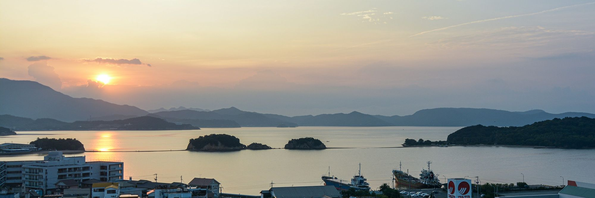
A travel journal by Ji
다카마쓰, 이틀의 기록
01 — Travel
Takamatsu, Kagawa
26—27 November 2026
바다를 한 번 건너고, 우동을 세 번 먹고, 같은 정원을 낮과 밤에 한 번씩 본다.
다카마쓰에 내리면 가장 먼저 하는 일은 짐을 맡기는 것이다. 그다음은 우동 한 그릇. 오후에는 배를 타고 쇼도시마로 건너가 두 시간 남짓 바다를 끼고 걷는다. 돌아오는 배에서 해가 지고, 그날 밤은 리쓰린 공원의 단풍 아래에서 끝난다.
이튿날은 일부러 늦게 움직인다. 아침 우동을 먹고, 어제 밤에 봤던 정원을 낮에 다시 본다. 같은 자리인데 빛이 달라서, 다른 곳에 온 것처럼 느껴진다.
렌터카는 없다. 배와 버스, 그리고 걸어서. 짐은 가볍게, 현금은 조금.
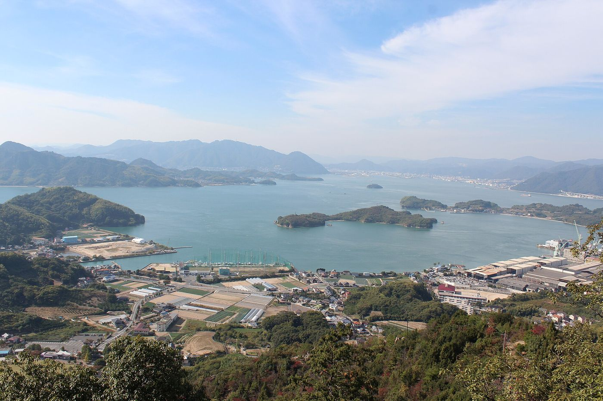
배를 타고 섬으로, 다시 돌아와 정원으로.
Itinerary — 2 days공항에서 배로, 배에서 다시 정원으로. 오늘의 목적지는 섬 하나와 밤 하나.
입국 수속을 마치고 1층 종합안내소에서 ‘우동현 오모테나시 패스’(うどん県おもてなしパスポート)를 받는다. 무료로 나눠주는 할인 패스다. 리무진은 2번 승강장에서 기다린다.
국제선 도착 시간에 맞춰 버스가 붙어 있다. 짐은 기사님이 아래 칸에 실어주고, 시내까지 37~40분. 내릴 때 스이카나 컨택리스 카드로 태그하면 끝난다.
숙소 프런트에 짐을 맡기고 나면, 여기서부터는 전부 걸어서다. 다카마쓰역과 아케이드가 이어지는 동네라 하루의 시작과 끝이 모두 이 골목에서 이루어진다.
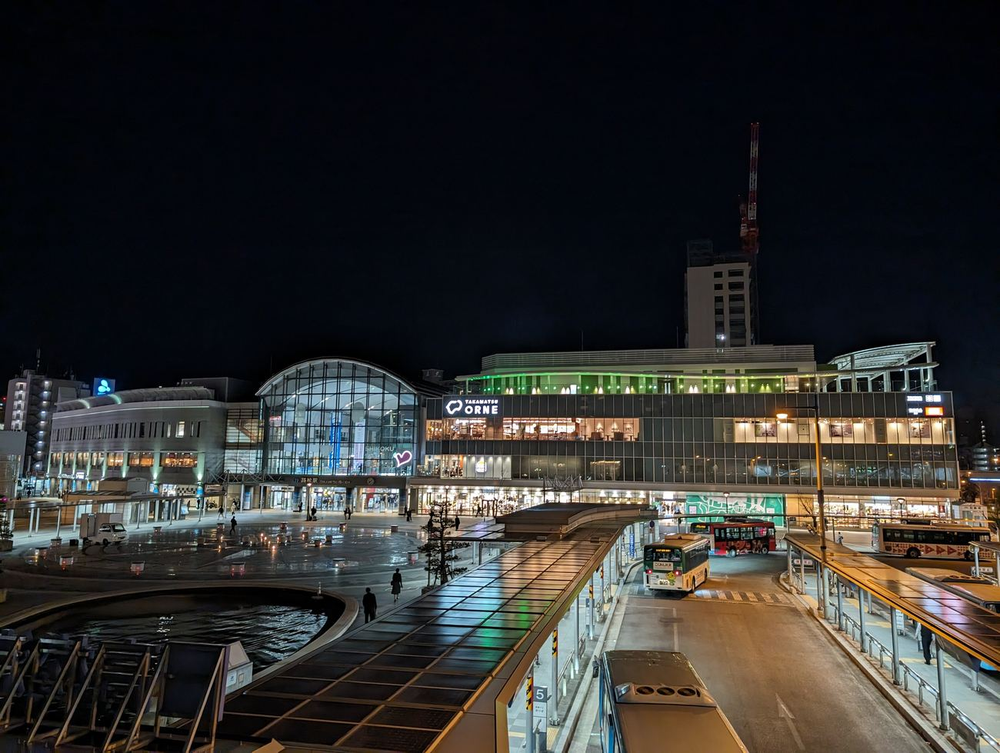
첫 끼는 우동. 목요일은 11시에 문을 열어 2시 반이면 닫는다. 오후 배 시간이 걸려 있으니 여기서는 오래 고민하지 않는다. 가마아게 한 그릇에 반숙 달걀 하나.
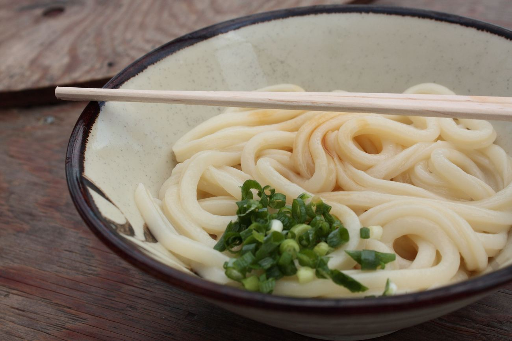
숙소에서 항구까지 걸어서 22분. 13시 40분 배를 기준으로 움직이면 30분의 여유가 생긴다. 승선권은 터미널에서 사고, 배는 15분 전에 도착해 줄을 선다.
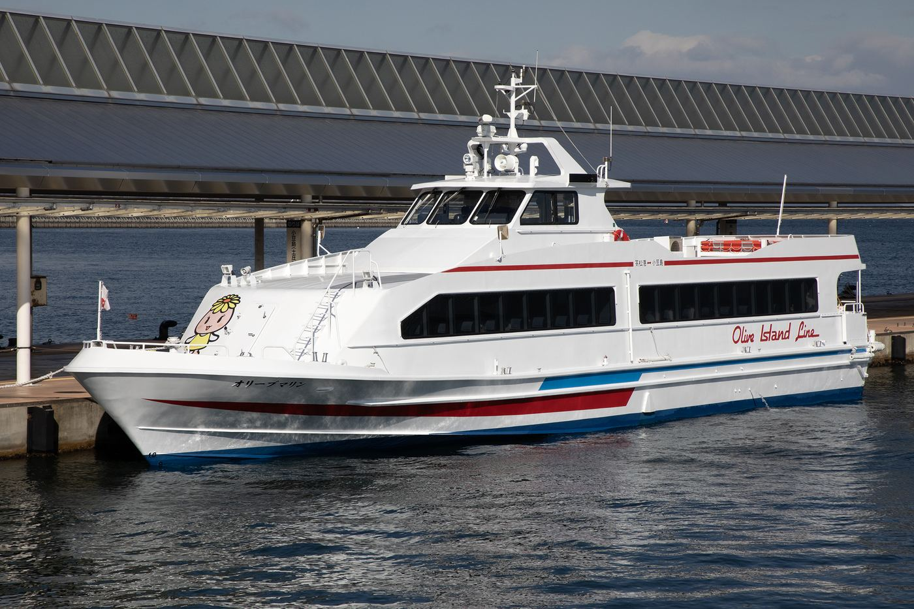
일반 페리로 60분. 세토내해의 섬들을 옆으로 지나간다. 12시 45분 배도 있지만, 10시 30분 도착에 점심까지 넣으면 이 배가 가장 자연스럽다. 앉을 곳은 갑판 쪽이 좋다.
항구 앞 ‘태양의 선물’ 조형물까지 3분. 바다를 끼고 걷는 산책로와 작은 카페가 있고, 앉아서 배를 기다리는 것만으로도 두 시간은 금방 지나간다. 모래길(엔젤로드)은 항구에서 도보 30~35분이라 이번 두 시간에는 넣지 않았다.
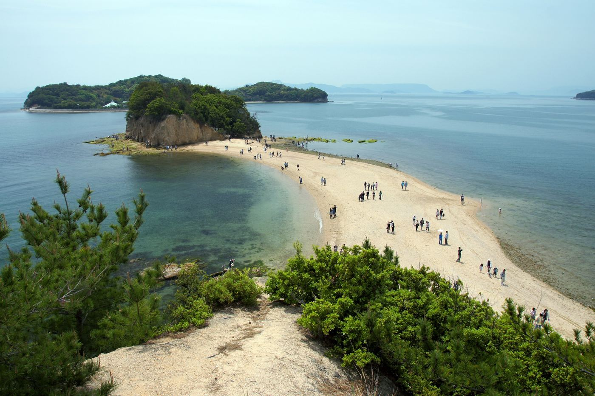
11월 26일, 모래길이 드러나는 시간은 02:30–08:30과 15:51–21:51 (시코쿠페리 공식 표). 14시 40분 도착 기준으로는 왕복 1시간이 걸려 두 시간 안에 넣기 어렵다.
꼭 걸어보고 싶다면 올리브 버스로 왕복 10분씩 줄이고, 돌아오는 배를 17시 30분으로 미루면 된다. 대신 다카마쓰 도착이 18시 30분이라 리쓰린 공원 입장이 19시가 된다.
돌아오는 배에서 해가 진다. 11월 다카마쓰의 일몰은 16시 54분. 갑판에 서 있으면 섬들이 검은 실루엣으로 남는다. 17시 30분 배를 탔다면 18시 30분 도착.
항구에서 고토덴이나 버스로 15~20분. 11월 20일부터 29일까지 열리는 가을 라이트업 기간이라 17시부터 21시까지 연다. 입장은 20시 30분까지, 500엔. 남호에 비친 단풍이 이 여행의 하이라이트다.
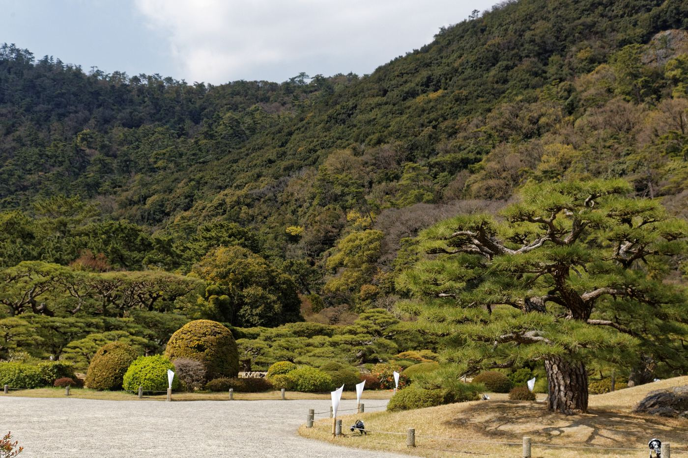
다카마쓰 명물 호네쓰키도리. 17시부터 23시까지, 마지막 주문은 22시 30분. 정원이 차면 대기가 길어지니 공원에서 나오자마자 향한다. 닭다리 한 조각은 손으로 들고 먹는다.
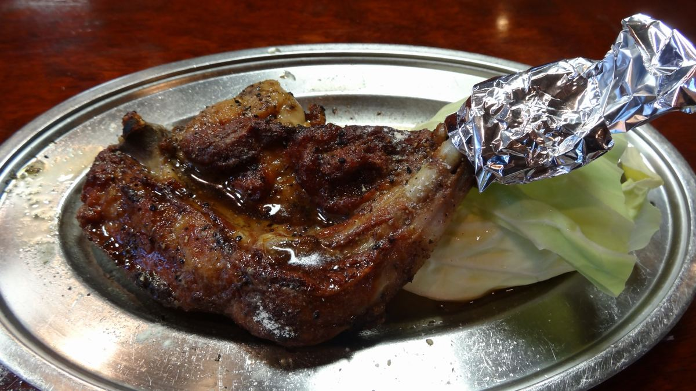
아케이드 아래로 이어지는 밤 산책. 대부분의 가게가 닫았지만 불빛과 사람은 남아 있다. 숙소까지 걸어서 10분이라, 오늘의 마지막 길로 삼기 좋다.
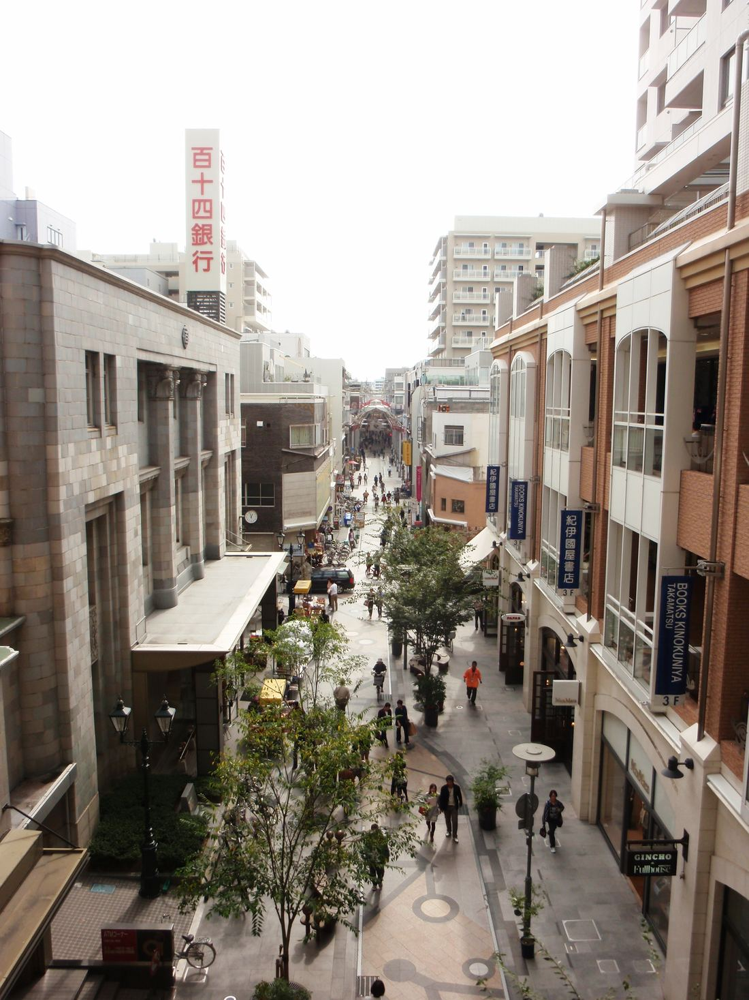
내일 아침 마실 물, 간식, 화장품. 밤 12시까지 하니 마지막 코스로 적당하다. 계산 줄이 길면 다음 날 아침으로 미뤄도 된다.
숯불 고기로 한 잔 더 하고 싶다면 카지야마치의 신묘 세이니쿠텐. 16시부터 24시까지. 배가 부르면 그냥 지나쳐도 되는, 대안으로만 남겨둔 코스다.
문 닫는 시간만 지키면, 나머지는 걸어서 돌아오는 길이다. 내일은 늦게 시작한다.
Day 01 전체 경로 — 공항 · 우동보 · 다카마쓰항 · 도노쇼항 · 리쓰린 · 잇카쿠 · 상점가
Google Maps에서 열기 ↗일부러 늦게 시작하는 아침. 어제 밤에 본 정원을 낮에 다시 본다.
짐은 프런트에 맡긴다. 오후에 찾아서 그대로 버스에 오르면 된다. 오늘 필요한 것만 작은 가방에.
아침 6시부터 여는 집. 현금만 받는다. 카마버터 우동에 달걀을 얹어 먹고 9시 전에 나온다. 숙소에서 걸어서 26분, 이른 아침이라 길이 한산하다.
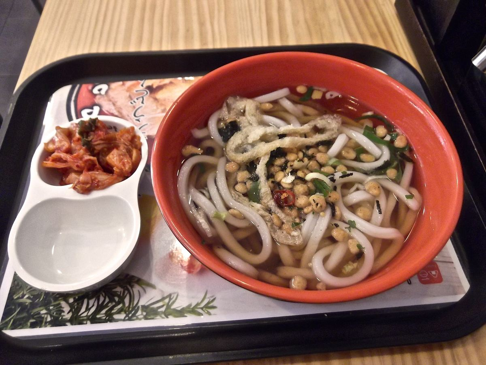
어제 밤에 본 남호를 낮에 다시. 11월은 6시 30분에 열어 17시에 닫는다. 입장료 500엔. 밤의 조명과 낮의 햇빛은 같은 연못을 전혀 다르게 만든다.
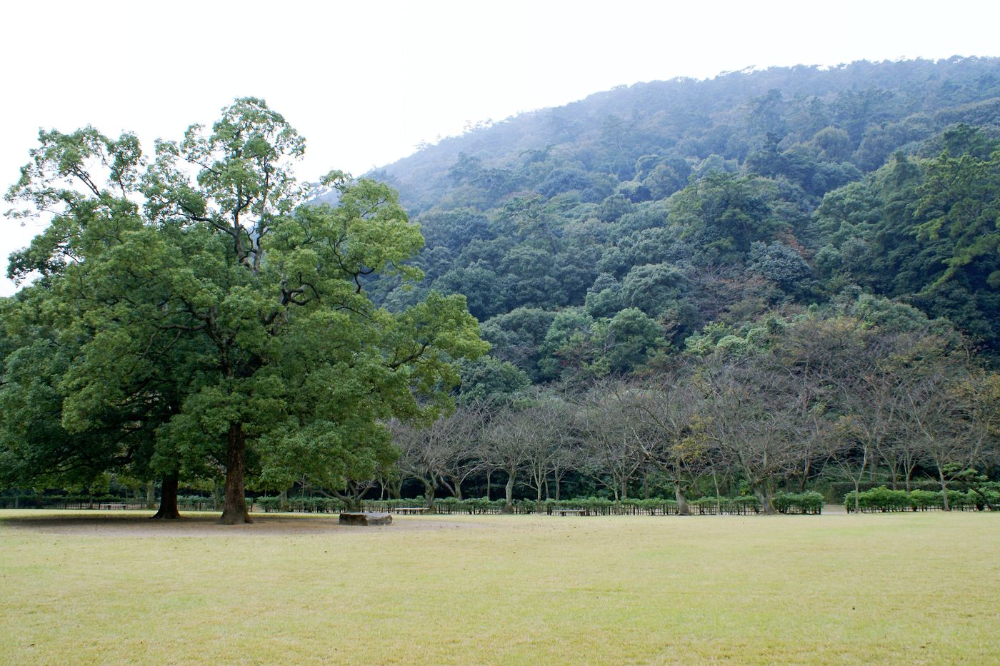
공원 안, 남호를 마주한 다실. 9시부터 16시 30분까지, 접수는 16시에 끝난다. 말차와 과자가 800엔, 센차와 과자가 600엔. 앉아서 연못만 보다 나와도 좋다.
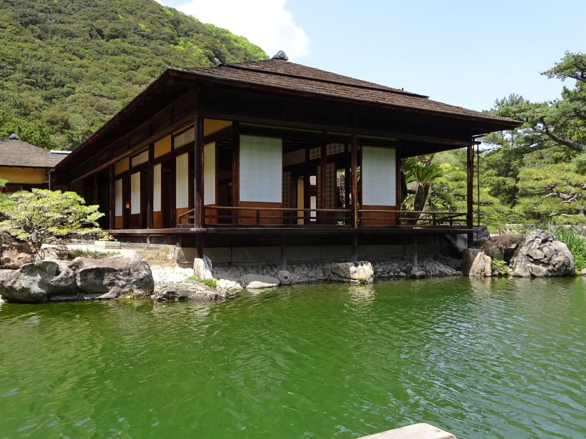
공원 동쪽, 걸어서 5분. 9시 30분에 열어 2시 30분에 닫고 일요일은 쉰다. 셀프로 우동을 데쳐 먹는 방식이라 회전이 빠르다. 마지막 우동은 여기서.
고토덴 리쓰린코엔역까지 걸어 5분, 다카마쓰치코까지 7분. 역에서 내려 효고마치까지 다시 10분 걸으면 숙소다. 짐을 찾고 버스 정류장으로 넘어간다.
17시 출발 두 시간 전, 15시 공항 도착을 목표로 한다. 버스는 약 37분. 정류장은 효고마치, 숙소 앞이다. 남는 시간은 아케이드에서 마지막 쇼핑으로 쓴다.
2층 출발 로비에서 체크인하고, 남는 시간은 1층 우동 자판기와 기념품점에서 쓴다. 우동을 들고 갈 생각이라면 여기서 마지막 한 그릇.
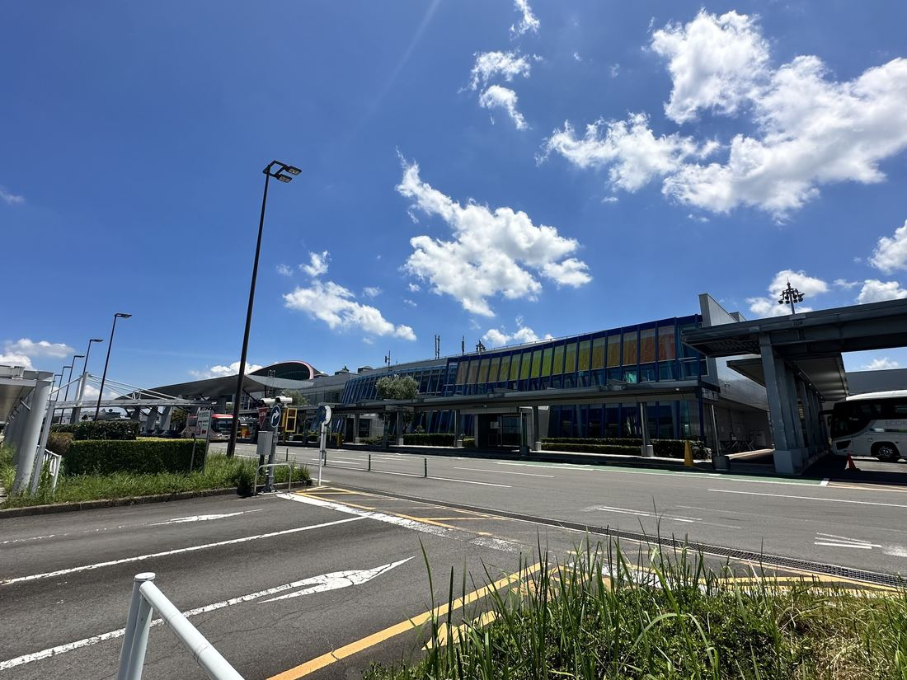
이틀은 이렇게 끝난다. 배 한 번, 우동 세 그릇, 정원 두 번. 다음 호에서 또.
Day 02 전체 경로 — 바카이치다이 · 리쓰린 · 기쿠게쓰테이 · 우에하라야 · 공항
Google Maps에서 열기 ↗영업시간·요금·배편은 2026년 11월 확인 기준이다. 배는 날씨로, 가게는 재료가 떨어지면 일찍 닫는다. 출발 전에 각 시설 공식 페이지에서 한 번 더 확인할 것.
이 페이지에는 예약번호, 연락처, 숙소 이름 같은 개인 정보를 넣지 않았다.
After dark
같은 정원을 하루에 두 번 보는 일.
리쓰린 공원의 가을 라이트업은 11월 20일부터 29일까지, 열흘만 열린다. 17시에 불이 들어오고 21시에 꺼진다. 남호에 비친 단풍, 센칸치의 수면, 히구라시테이의 노란 조명. 밤 배를 타려면 850엔을 더 내고 미리 예약한다.
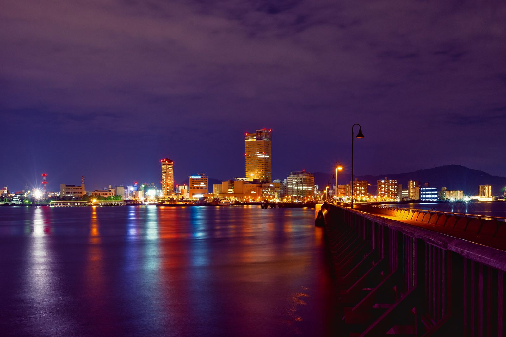
02 — Food
Sanuki udon ×3
Honetsuki dori ×1
사누키 우동은 세 번, 호네쓰키도리는 한 번. 이틀 동안 먹은 것들.
우동집은 대부분 현금을 받는다. 만 엔 한 장을 깨서 다니면 충분하다. 영업시간은 2026년 11월 기준.
공항에서 내려 가장 먼저 닿는 우동집. 목요일은 점심만 한다. 가마아게 한 그릇에 반숙 달걀을 얹어 먹고, 2시 반 전에 나오면 된다.
아침 6시부터 여는 집. 카마버터 우동이 유명하다. 현금만 받으니 지폐를 준비해 갈 것. 이른 아침이라 걸어가는 길이 조용하다.
리쓰린 공원 동쪽, 걸어서 5분. 셀프로 우동을 데쳐 먹는 방식이라 회전이 빠르고 가볍다. 일요일은 쉰다.
다카마쓰 명물 호네쓰키도리. 닭다리 한 조각을 손으로 들고 먹는다. 저녁 5시에 열고 마지막 주문은 10시 30분. 주말엔 줄이 길다.
정원 안의 다실. 말차와 과자가 800엔, 센차와 과자가 600엔. 입장료는 공원 입장료와 별도다. 창가 자리에 앉으면 남호가 통째로 들어온다.
우동집은 현금만 받는 곳이 많다. 1인 10,000엔이면 이틀 식비와 작은 간식까지 넉넉하다. 카드는 편의점·돈키호테·잇카쿠에서 된다.
03 — Daily
Before & After
Saved in this browser
체크한 항목은 이 브라우저에 저장된다.
입력한 값은 이 브라우저에만 저장된다. 실제 결제 금액과 다를 수 있다.
여행이 끝나면, 여기에 사진과 짧은 메모를 남긴다. 잊기 전에 한 장.
사진은 브라우저에만 저장된다(최대 6장). 기기를 바꾸면 사라지니, 오래 남길 기록은 images/에 사진을 넣고 본문을 직접 고치는 편이 좋다. 방법은 README에 있다.
04 — Archive
One trip, one issue
Osaka · Tokyo · Korea
Issue 01
2026.11.26—27 · 쇼도시마와 리쓰린
Issue 02
다음에 걸릴 호. 아직 비어 있다.
Issue 03
도쿄에서 보낸 며칠.
Issue 04
가까운 곳의 여행 기록.
05 — About
여행하고, 먹고, 기록하는
지의 일상
여행하고, 먹고, 기록하는 지의 일상.
한 번의 여행을 한 호(issue)로 묶는다. 일정과 사진, 그리고 돌아와서 쓴 후기를 한곳에 남긴다. 첫 호는 2026년 11월의 다카마쓰.
일정은 실제로 다녀온 동선을 그대로 적었다. 배 시간과 가게 영업시간은 그날 기준이고, 물때처럼 하루 단위로 달라지는 것은 날짜를 함께 적어두었다.
사진은 Wikimedia Commons의 자유 라이선스 사진을 쓴다. 직접 찍은 사진으로 바꾸려면 images/ 폴더의 같은 이름 파일을 덮어쓰면 된다. 자세한 방법은 README에 적어두었다.
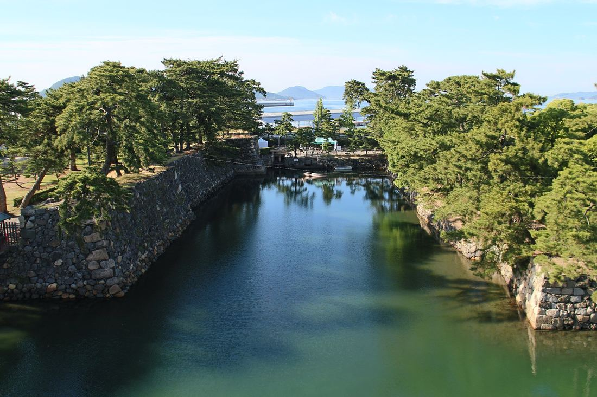
사진은 원본을 자르지 않고 크기만 줄여 사용했다. 라이선스 원문은 각 링크에서 확인할 수 있다. 사진 설명에 (이미지)라고 적은 것은 그 가게에서 찍은 사진이 아니라 같은 음식의 예시 사진이라는 뜻이다.